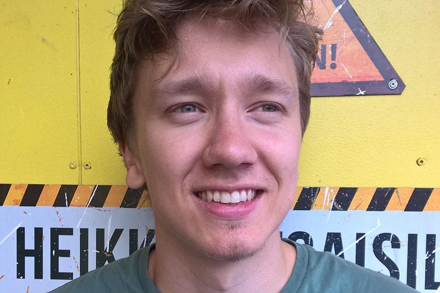
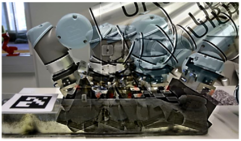
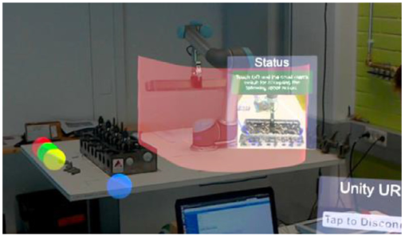
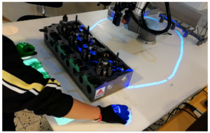
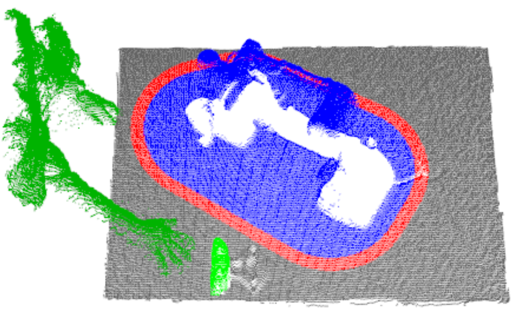
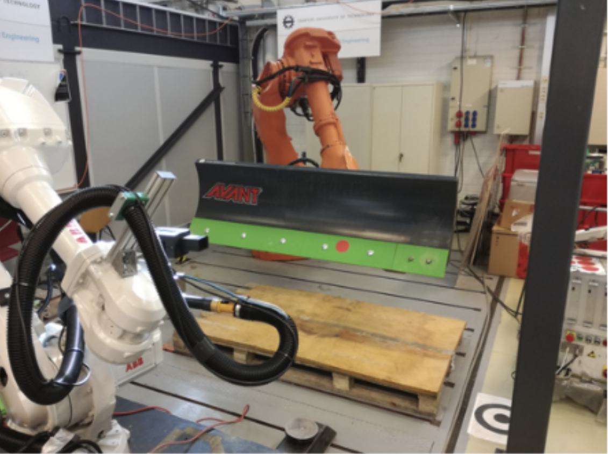
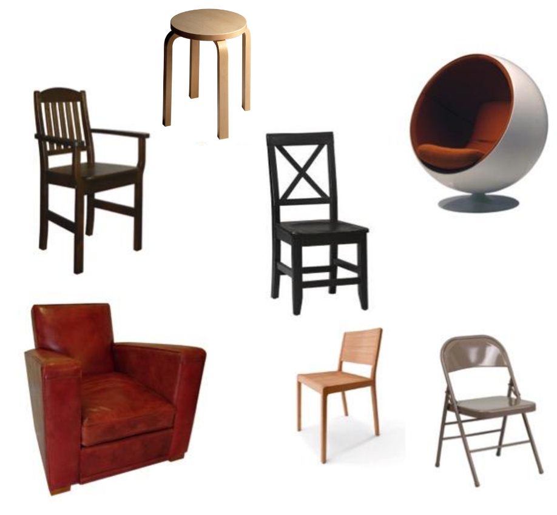

|
Antti Hietanen
I am currently working as a senior autonomous vehicle engineer at Sensible4, making self-driving technology for all weather conditions.
I completed my PhD at Tampere University (previously known as Tampere University of Technology), where I was advised by Joni-Kristian Kämäräinen and Minna Lanz.
During my studies, I was a member of the Computer Vision Group and the Intelligent Production Systems Group.
My research interests are computer vision and machine learning and their applications in robotics, such as vision-based robot guidance and human-robot collaboration.
In general, I like to see piece of heavy metal moving based on your implemented algorithm.
|

|
Research Projects
|

|
Benchmarking Pose Estimation for Robot Manipulation
Antti Hietanen, Jyrki Latokartano, Alessandro Foi, Roel Pieters, Ville Kyrki, Minna Lanz and Joni-Kristian Kämäräinena
Robotics and Autonomous Systems, 2021
paper |
video
We propose a probabilistic evaluation metric that ranks an estimated object pose based on the conditional probability of completing a robotic task given this estimated pose.
In addition, we present a procedure to generate automatically a large number of random grasp poses and corresponding task outcomes that are then used to estimate the grasp conditional probabilities.
In the experiments, the metric is found to be more realistic for measuring the estimated pose “goodness” for a given manipulation task compared to prior art.
|
|

|
AR-based Interaction for Human-robot Collaboration
Antti Hietanen, Roel Pieters, Minna Lanz, Jyrki Latokartano and Joni-Kristian Kämäräinen
Robotics and Computer-Integrated Manufacturing, 2020
paper |
video
In this work, the usefulness and readiness level of two different AR-based devices, projector and Microsoft HoloLens, as an user-interface medium in manufacturing task, is evaluated.
The qualitative and quantitative results from the experiments indicate that projector-based interaction can support and increase the comfort of the human operator during the task while HoloLens is found surprisingly unpractical due to various reasons.
|
|

|
Proof of concept of a projection-based safety system for human-robot collaborative engine assembly
Antti Hietanen, Alireza Changizi, Minna Lanz, Joni-Kristian Kämäräinen, Pallab Ganguly, Roel Pieters and Jyrki Latokartano
International Conference on on Robot & Human Interactive Communication (RO-MAN), 2019
paper
In this work, we introduce a realistic human-robot collaboration task where the co-workers conduct a diesel engine task and a work allocation schedule between human and robot resources is defined.
In addition, the work presents an important extension to our safety model by extending the monitored zones around the carried object since the assembly task includes heavy and sharp objects.
|
|

|
Depth-sensor–projector safety model for human-robot collaboration
Antti Hietanen, Jussi Halme, Jyrki Latokartano, Roel Pieters, Minna Lanz and Joni-Kristian Kämäräinen
International Conference on Intelligent Robots and Systems (IROS) Workshops, 2018
paper |
video
A safety model for human-robot collaboration is proposed where the shared workspace is divided
spatially to dynamic virtual zones, each having separate safety features.
The zones are modeled and monitored by a single depth sensor overseeing the shared workspace.
For interaction and feedback, a projector-camera user-interface is implemented.
The proposed and a baseline safety system are experimentally evaluated in a simple assembly task.
|
|

|
Robustifying Correspondence Based 6D Object Pose Estimation
Antti Hietanen, Jussi Halme, Anders Glent Buch, Jyrki Latokartano and Joni-Kristian Kämäräinen
International Conference on Robotics and Automation (ICRA), 2017
paper |
video
We propose two methods to robustify 3D-to-3D correspondence-based object pose estimation: curvature filtering and region pruning.
The former method removes points from the object surface that are within low curvature areas and the latter processes the surface as local regions for which a good combination is sought by a trial-and-error procedure.
Based on the experiments, the relatively simple algorithms are able to improve the accuracy of several pose estimation methods and were later utilized in a vision guided maintenance task where a tool of an autonomous ground vehicle was changed.
|
|

|
A Comparison of Feature Detectors and Descriptors for Object Class Matching
Antti Hietanen, Jukka Lankinen, Joni-Kristian Kämäräinen, Anders Glent Buch, Norbert Krüger
Neurocomputing, 2016
paper
The work extends the well known 2D local feature detector and descriptor
benchmark to class matching settings.
In particular, we were interested to study how well the recent feature detectors and descriptors
can find “common codes” between two object examples from the same class.
As the main results from the experiments, the performance of detector-descriptor pairs on class matching settings is poor and specialized descriptors for visual class parts and regions are needed.
|
In Media
|
{kind=link}